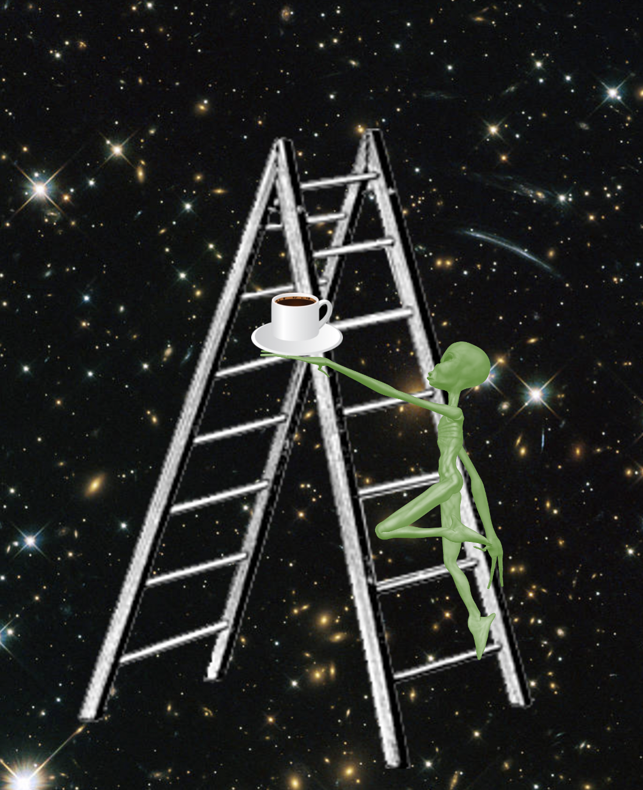

Forrige side
Kaffe?

Før vi begir oss ut på de mer svimlende avstandene, trenger vi litt kaffe. Det konseptuelt vanskligste i denne delen er over, resten er litt greiere. Ihvertfall 15 min pause... Klar for steget ut av vår galakse?